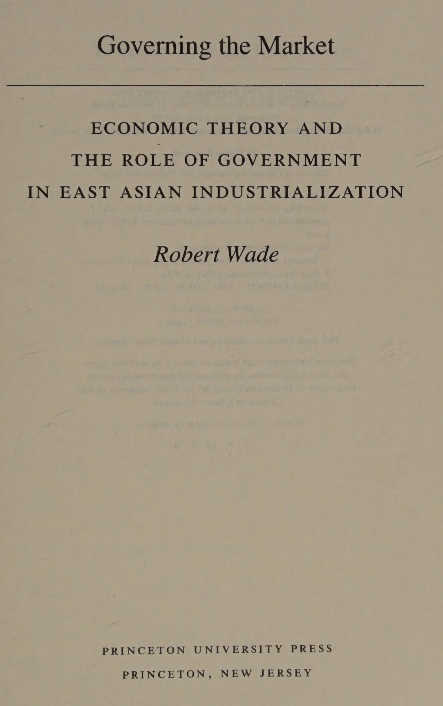
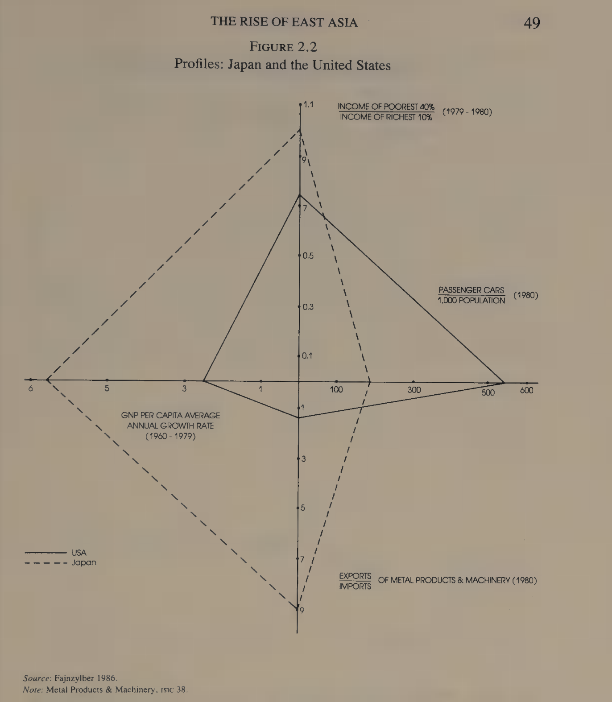

flowchart LR A["Primary IS<br/>(1960s)<br/>Consumer goods: textiles, foods"] --> B["Leading sectors lead early<br/>(mid-1960s–70s)<br/>Syn. fibers, electronics"] --> C["Secondary IS visible<br/>(late 1970s)<br/>Plastics, machinery, chemicals"] style A fill:#E1F5EE,stroke:#0F6E56,color:#085041 style B fill:#F1EFE8,stroke:#5F5E5A,color:#444441 style C fill:#EEEDFE,stroke:#534AB7,color:#3C3489
East Asia’s Industrialization: What it means for India?
Robert Wade’s ‘Governing the Market’ and the Role of State in Economic Development
Economics
Industrialization
India
Tamil Nadu
Budgets
Legislature
Governance
Political Economy
Politics
East Asia’s industrialization, analyzing the economic development of Japan, Taiwan, and South Korea, and the role of government in their success.
Abstract
Robert Wade’s Governing the Market argues that East Asia did not become rich by simply freeing markets. Japan, Taiwan, and Korea built Governed Markets, where states shaped investment, protected and promoted selected industries, and forced firms to compete internationally.
Preface
India has been independent for nearly eighty years. It has produced engineers, doctors, scientists, and software professionals who lead firms and institutions across the world. Its digital infrastructure, Aadhaar, UPI, GSTN, is genuinely world-class. Its democracy has survived wars, partitions, famines, and enormous internal diversity. This is truly remarkable and source of accomplishment for Indians.
India wants to become a developed country. Many Indians, do not just want a developed country, the aspiriation is higher, to become a super-power. As an Indian, since early 2000s, I have been following various authors on this topic, the famous Abdul Kalam’s book India 2020, ended up being a disappointment to me. The question worth asking honestly is, why not India is developed? So, I began investigating, how India can become a developed country, and one of the ways is to look at how other countries have done it, especially those that have successfully industrialized.
That is why we turn to East Asia to study how countries like Japan, Taiwan, and South Korea actually transformed themselves.
At present, What is India? The answer is uncomfortable, India is a democratic, transfer state, some parts have a capable administrative state. But to become a developed country, India needs to become a developmental state. This means, raising the investible surplus, lock it into domestic productive capacity, tilt investment toward high-wage complex sectors, and expose firms to export discipline.
- Transfer state
- A government whose primary fiscal activity is moving money from one group to another, collecting taxes and then redistributing them as salaries, pensions, subsidies, welfare payments, and interest on debt, rather than investing in building productive capacity.
Developmental state A developmental state is a government that actively intervenes in the economy, steering industrial policy and directing resources to achieve rapid, long-term economic growth and structural transformation.
Introduction
One such work is Robert Wade’s “Governing the Market: Economic Theory and the Role of Government in East Asian Industrialization”. This book delves into the reasons behind the remarkable economic success of East Asian countries, particularly Japan, Taiwan, and South Korea, and challenges both free-market advocates and proponents of government intervention.

The Book’s Thesis is examining two stories, East Asia’s success is due to openness, small government, correct prices, and export discipline. Or, Second story which is activist states directly drove growth from above. The author rejects both, He says, the better way to see East Asia is as a synergy between a public system and a mostly private market system.
Part I: What East Asia Actually Did?
Robert Wade spent years inside Taiwan’s bureaucracy, factories, and policy networks. His conclusion challenges both the free-market orthodoxy and the state-planning tradition. East Asia did not succeed by freeing markets or by replacing them. It succeeded by governing them.
Chapter 1: States, Markets, and Industrial Policy
In this Chapter, the author lays out competing economic theories of development of East Asia. Early views of economists in Great Depression and World War II was that markets along didn’t allow to create prosperity. Governments were seen as a mobilizer of resources and a coordinator of economic activity. The role of state was downgraded in 1950s, 60s. The predominant view of development for developing countries in 1950s, 60s, 70s was import substiution industrialization (ISI). The idea was to protect domestic industries from foreign competition, allowing them to grow and eventually become competitive. However, this approach often led to inefficiency and lack of competitiveness in the long run[1].
The second was, extensive government intervention tended to generate rent seeking on a significant scale, that is, to divert the energies of economic agents away from production and into lobbying for increased allocations of government subsidies and protection. Some of the most successful economics, including Taiwan, South Korea, Hong Kong,and Singapore had achieved extraordinary industrial growth by using an outward oriented model driven by market incentives and a strong private sector.
The proper role of government according to neoclassical economics:
a) Keep the economy stable
b) Build infrastructure
c) Provide public goods like education, defense, law, and research
d) Help markets work better
e) Correct clear market failures
f) Help the poorest people meet basic needs
Everyone agrees governments have some useful role, but economists disagree about when markets fail and what governments should do about it. In terms of policies, some policies i.e horizontal level benefit all, better education for all, while industrial specific policies provide subsidies to specific industries, the politician might not spot the actual market opportunities. Governments plan the environment for business, not the business itself. The author moves to explain Neoclassical economics, where they base their confidence on theory of comparative advantage, in this, countries should specialize in producing goods where they have a comparative advantage, and trade with other countries to obtain goods that they do not produce efficiently. This theory suggests that free trade and minimal government intervention will lead to optimal economic outcomes[1].
Hence, economic liberalization, reduced government intervention, privatizing, opening trade is what promotes growth. However, comparative advantage has its own limitations, as it does not explains, what causes the economic growth, and how and why free trade accelerates growth. To answer this, neoclassical economists, rely on ad hoc assumption, as trade fosters technological change, entrepreneurship by exposing firms to competition. Economists like Paul Krugman challenge this limitation by showing, increasing returns to scale and imperfect competition, moderate protectionism or industrial policy could promote faster growth in some cases. So, “free trade is always best” conclusion doesn’t universally hold in the real world, especially for developing nations.
Empirical studies from the 1970s–1980s (e.g., Balassa, Lal, Krueger, Bhagwati) found that countries pursuing outward-oriented (export promotion) policies generally performed better than those relying on import substitution. Béla Balassa, Deepak Lal, Anne Krueger, and Jagdish Bhagwati were prominent economists. After many empirical studies, it was found Neoclassical confidence in free trade and structural adjustment rests more on belief and selective evidence than on robust, universally consistent proof[1].
This is from 1990s, when the author wrote the book. The World Bank (1987) classified 41 developing countries into several categories, Strongly outward-oriented Moderately outward-oriented, Moderately inward-oriented,Strongly inward-oriented and compared them on various economic performances from 1963–73 and 1973–85. The result was Moderately inward-oriented economies outperformed moderately outward-oriented economies on half the indicators, including inflation, savings, and GDP growth, especially in the later period (1979–85). The success of the outward oriented group is driven almost entirely by three East Asian economies: Korea, Hong Kong, and Singapore, with Korea’s large economy heavily skewing the weighted averages.
The author jokes, that only anthropologists are allowed to draw sweeping conclusions from a sample of less than two, emphasizing that generalizing global policy prescriptions from such a tiny subgroup is methodologically absurd. Their success might owe more to strategic industrial policy than to neoclassical openness. For the Case of South Korea, High effective protection rates, Substantial variation in protection across industries, implying strong selective intervention. If Korea is excluded, only Hong Kong and Singapore remain in the strongly outward group, far too small a base to generalize from. The take away is neoclassical and World Bank arguments for outward orientation are based on selective, methodologically weak evidence. Apparent successes like Korea don’t fit the theoretical model, they succeeded through strategic state-led industrial policy, not laissez-faire trade liberalization[1].
The author shares a powerful critique is the fallacy of composition, even if one country can grow through export expansion, not all can do so simultaneously. If many more developing economies tried to follow an export-led strategy simultaneously, developed countries would likely retaliate with stronger protectionist barriers[1].
Next, the author shares literature on Free Market theory of East Asia’s Success. An abundant literature attributes the industrial success of the five economices Japan, Taiwan, Korea, Hong Kong, and Singapore to their reliance on free markets. For example, Hugh Patrick declares himself to be of the school which interprets Japanese economic performance as due primarily to the actions and efforts of private individuals and enterprises responding to the opportunities provided in quite free markets for commodities and labor.
While the government has been supportive and indeed has done much to create the environment of growth, its role has often been exaggerated. Referring to the five, Edward Chen asserts that state intervention is largely absent. What the state provided is simply a suitable environment for the entrepreneurs to perform their functions. There’s also the simulated theory of free market for East Asia’s success. Some neoclassical economists conclude that the governments of East Asia did more than just liberalize markets and lower distortions.
In their view the governments also intervened more positively to offset other distortions, both those caused by other policies and those remaining from government failure to change distortion inducing institutions directly). Frederick Berger states the argument as follows: I believe that the crux of the Korean example is that the active interventionist attitude of the State has been aimed at applying moderate incentives which are very close to the relative prices of products and factors that would prevail in a situation of free trade. It is as though the government were simulating a free market[1].
Jagdish Bhagwati offers a refinement of the SM interpretation within his concept of an Export Promotion (EP) strategy, EP policies mean that the effective exchange rate for exports and imports is kept roughly equal, ensuring no bias toward domestic production or import substitution, Achieving this equality requires active government management, especially of credit systems and foreign exchange, Crucially, Bhagwati emphasizes confidence-building, governments must demonstrate commitment to exports by, Publicly endorsing outward orientation, Providing targeted credit supports, Sometimes even adopting “ultra-export promotion” measures.
In summary, two neoclassical economic views on East Asia’s succcess are, the Free Market (FM) view, which sees the state as neutral and markets as the main engine, the Simulated Market (SM) view, which sees limited government intervention designed to mimic ideal market incentives[1].
Another alternative explanation to East Asia’s success is Governed Market (GM) theory. It argues that the East Asian miracle, especially in Japan and South Korea was not the product of self-regulating or simulated markets, but of strategic and directive state intervention that deliberately shaped industrial priorities, allocated resources, and guided private enterprise. Governed Market theory challenges the fundamental assumption of neoclassical economics, where that growth primarily results from spontaneous market behavior. In East Asia, development was not an outcome of free or simulated markets, it was the consequence of strong, autonomous, and purpose-driven states that worked with capitalists to, Create industries against initial comparative disadvantage, Channel finance strategically, and Coordinate long-term structural change[1].
The Governed Market Model says, East Asia’s success came not from laissez-faire or imitation of ideal markets, but from states that governed the markets—using corporatist structures, technocratic leadership, and targeted economic policies to marshal private enterprise into achieving national industrial goals.
East Asia had corporatist and semi-authoritarian structure, the states guided markets through concrete policy tools such as
Land reform — broke up large estates, improved rural equality, expanded the domestic market.
Financial system control — directed credit through state-controlled banks.
Macroeconomic stability — stable exchange rates, interest rates, inflation.
Trade protection — shielded infant industries, prioritized essential imports.
Export promotion — tied credit and incentives to export performance.
Technology acquisition — facilitated transfer from multinationals.
Industrial assistance — supported innovation, mergers, capacity expansion.
The Governed Market (GM) theory argues that the exceptional economic performance of East Asian countries such as Japan, Korea, and Taiwan resulted from deliberate state-led guidance of market processes rather than free-market efficiency. Unlike free or simulated market approaches, the GM framework highlights how governments actively shaped industrial investment patterns through sector-specific policies, sometimes leading the market by initiating strategic projects, and other times following private initiatives but amplifying their scale. These interventions deliberately got prices wrong to promote technological upgrading and high levels of capital accumulation, supported by corporatist and semi-authoritarian political structures that allowed long-term policy consistency. Ultimately, East Asia’s success came from guided development within stable, organized state–business partnerships, not from spontaneous market allocation [1].
When I look at East Asia’s postwar economic miracle, what stands out most to me is the Governed Market (GM) theory a perspective that explains Japan’s, Korea’s, and Taiwan’s success not through laissez-faire markets but through deliberate, strategic state guidance. Instead of letting prices and competition run their natural course, these governments actively steered industrial investment, sometimes taking the lead in launching key projects and other times backing private initiatives to scale them up. They even bent market signals—intentionally getting prices wrong to accelerate technological upgrading and capital accumulation. Crucially, this happened within corporatist and semi-authoritarian systems that could sustain long-term planning and close coordination between the state and business elites. In short, East Asia’s transformation wasn’t a free-market miracle—it was a story of disciplined, state driven partnership guiding the market toward national development goals[1].
Chapter 2: The Rise of East Asia
The first chapter ends with asking, How good has been Taiwan’s economic performance?
The rise of East Asia is one of the most remarkable stories of the 20th century. During the publication of this book in 1990, Japan was growing at 6% per year, Taiwan, Korea, Hong Kong, and Singapore was growing at more than 8 percent. If we look at present 2026’s metrics, these countries have been continuing to perform economically.
Hong Kong Hong Kong’s 2026 population estimate is about 7.38 million, with a 2025 share of world population around 0.09%, Hong Kong’s 2024 GDP per capita is reported at about $54,107. Singapore’s population is about 6.0 million, and its 2026 GDP is about $606.23 billion, with GDP per capita around $99,042.
Taiwan Taiwan is widely reported to produce about 60% of the world’s semiconductors and about 92% of the most advanced chips. Taiwan’s GDP per capita is projected to exceed US$40,000 for the first time in 2026, reaching about US$41,019. Taiwan as a high-income economy transitioning toward advanced nation status, surpassing Japan and South Korea in per capita GDP ranking[1]. Notice, Taiwan’s 19 million people enjoyed an average income of US$3,600 in 1986, about the same as Greece. Portugal, Brazil, Mexico, and Malaysia are much lower.
Industrialization Deepening
In short, Korea, Taiwan’s industrialization has been extraordinarily compressed. They achieved in fifteen years what took Japan twenty five years and Great Britain over fifty years. Both Taiwan, Korea shifted from Agriculture to Industry in 1960s. Their manufacturing, Industrial depth increased in 1970s. This transformation is reflected in industrialization ratio called Hoffman Ratio. Both Taiwan and Korea moved from a Hoffman ratio of 4:1 to roughly 1:1 within fifteen years, showing a swift transition similar to Japan’s transition, but in a shorter time frame[1].
Taiwan’s industrial deepening continued, surging electrical machinery and transport equipment, from ~4% of manufactured exports (1956–61) to 23% (1966–71). The Rising Asian Tigers, increased their technological export gains, Taiwan, Korea, Singapore, Hong Kong gained world market share in 15 of the top 20 technology-intensive sectors. So, Industrial deepening refers to how economies become more complex, moving from simple manufacturing to advanced manufacturing that relies on more machinery, chemicals, and interconnected supply chains[1].

Japan Japan’s development model was not mainly about early mass consumption. Instead, high investment, industrial build-up, export strength, rapid growth, relatively lower inequality. The chart says Japan became rich through a high-investment, export-driven, growth-focused path, while the U.S. was more consumption-heavy and car-heavy but less dynamic in growth and industrial export performance.Robert adds critique to economists who study developmental economics, they need to add anthropological immersion approach, spending extended time engaging directly with local officials, businesspeople, and scholars to understand how institutions and trade regimes truly operate in practice[1].
Taiwan and Korea developed in a pattern closer to Japan. Taiwan and South Korea built productive industrial economies first. Mexico and Argentina showed more limited industrial strength, and in Argentina especially, consumer ownership was higher without the same export dynamism. Not all middle-income countries grow the same way. Some become strong by building export industries and productive capacity. Others may show consumption and urban modernity without achieving the same industrial transformation[1].
Chapter 3: The Neoclassical Explanation
For Taiwan, virtually all economics literature speaks of Taiwan’s industrial success is the coming together around 1958-62 of four key conditions: a virtual free trade regime for exporters and a lowering of protection more generally; a free labor market; high interest rates; and conservative government budgeting[1].
The author lists four policy reforms:
Exchange Rate Reform: The government abolished the multiple exchange rate system and introduced a sharply devalued unified rate. This improved incentives to produce for export markets.
Trade Liberalization: Tariffs were lowered, and import restrictions eased—reducing protectionism and integrating Taiwan into global trade.
Export Promotion Measures: Exporters received rebates on import duties, tax and credit incentives, and marketing support. Export processing zones (created in 1965 and 1969) made foreign-invested export manufacturing easier.
Foreign Investment Liberalization: Rules allowed 100% foreign ownership, full profit repatriation, and tax advantages. This attracted foreign capital and technology, bolstering industrial expansion.
However, there were critiques to neoclassical explanation, Alice Amsden (1979)[2] wrote in Far Eastern Economic Review that Taiwanese government played a more interventionist, dirigiste role. Taiwan’s economy features a mix of small, flexible firms and larger support firms, challenging the mom-and-pop stereotype while enabling export dynamism. Small firms with often less than 20 employees, dominate direct exports 65% from those with more than 300 workers in 1985 producing labor intensive, price competitive goods and increasingly tech items like computers and IC designs.
These agile enterprises thrive on high supply elasticities, exemplified by entrepreneurs quickly copying imported tech. They compete through price in standardized products but adapt to niches needing differentiation, like machine tools or sports gear. Most exports stem from them, not large firms, bucking global norms where scale handles trade costs. Bigger firms supply critical inputs such as petrochemicals, steel, textiles, and provide credit, tech aid, and trained staff to smaller ones[1].Despite this fit, evidence shows aggressive government intervention reshaped trade and industry beyond market signals, creating an identification problem: how much growth stemmed from neoclassical conditions vs. selective promotion? Neoclassicals like Little (1979) and Ranis largely dismiss post-1962 state roles as irrelevant or untestable without counterfactuals, focusing on liberalization as the core driver[1].
Chapter 4: State lead Industrialization
In this chapter, the author shows chronologically the development of state lead industrialistion.
THE state in Taiwan has been doing much more than the neoclassical accounts to steer the direction of industrial growth. State influence has been concentrated on, but not confined to, the relatively large-scale firms of the upstream industries, leaving the downstream smaller-scale firms much freer.
Japan conquered Taiwan in 1895 following the First Sino-Japanese War, formalizing the transfer via the Treaty of Shimonoseki. Japan ruled Taiwan for 50 years (1895–1945), transforming it into a model colony with developed infrastructure while suppressing resistance. Japan developed Taiwan’s rail system, sugar industry, public works, and health services to support the imperial economy[1].
The Japanese Colonial Period (1895–1945)
Taiwan was under Japanese rule for 50 years and Japanese Officials developed it their own way, following Meiji Reforms. They transferred land rights from absentee landlords to local managers loyal to Japan. They created stable rural base focusing on commodities, Sugar and Rice, which were exported to Japan’s domestic market. In Agriculture, Japanese official introduced better seeds, fertilizers, irrigation, and drainage systems. Farmers were organized into cooperatives and associations, promoting technical development. By the 1930s, Taiwan developed industries in textiles, cement, chemicals, shipbuilding, aluminum, and food processing, partly in response to Japan’s military expansion. Industrial growth averaged 6–7% per year, exceeding Japan’s own rate. Living standards rose markedly: death rates halved between 1905 and 1936, and school enrollment reached 60% by 1940. Taiwan’s population achieved better welfare and literacy than many other colonies. By 1945, it was arguably China’s most advanced province in economic and industrial terms. Japan restricted the rise of a local capitalist elite, Taiwan entered the postwar era with low income inequality and without entrenched monopolies[1].
The Nationalist Period: 1945 To 1960
After World War II, the Nationalist government (KMT) took control of Taiwan in 1945. First was the Land Reforms, where Japanese ownership were transferred to local tenants and farmers. By noncommunist world standards the reform was significant, redistributing 37 percent of total cultivated area or 320,000 hectares. During this time, Agriculture production was highest next to Japan. And the Government invested surplus into Industry.
How Taiwan traded off farm prosperity for industrial growth in the 1950s?
Taiwan prioritized technology driven output and heavy taxation to prioritize industrialization over farm prosperity. In 1950s, the Government applied import substitution policies, to build domestic capacity amid resource scarcity and rapid population growth, Foundations were established for textiles, plastics, cement, glass, fertilizers, plywood, and artificial fibers. Investment levels, Gross capital formation stayed steady at 14–16% of GDP, high for middle-income peers, funding modern plants with repair services and emerging component suppliers. Manufacturing’s GDP share hit 22% by 1960. [Gross capital formation refers to total spending on fixed assets like factories, machinery, equipment, and infrastructure]
How Taiwan’s state used public ownership and selective privatization to drive industrialization?
The government launched upstream industries in 1960s, glass, plastics, steel, cement as public ventures or single factories, then privatized select ones to spark entrepreneurship. Arthur Lewis a famous economist’s call for risk‑taking industrial entrepreneurs. Public firms dominated in fuels, chemicals, textiles, and utilities, completing primary import substitution by 1957. Textiles anchored 1951 plans, built on mainland refugees relocated mills. State tools included tariffs, quotas, entry barriers, and direct allocation.
Taiwan’s state led industrialization extended beyond textiles into plastics and synthetic fibers, with the government acting as pioneer, matchmaker, and quality enforcer to jumpstart key sectors. U.S. consultants (J.G. White) flagged plastics in 1953. Planner K.Y. Yin handpicked entrepreneur Y.C. Wang created the Formosa Plastics empire. Government orchestrated a 1957 joint venture between China Man-Made Fiber Corp, between local textilers, U.S. firm von Kohorn and itself, Taiwan’s largest private” firm, though state-influenced[1].
How U.S aid helped Taiwan?
US Aid also played significant role, Aid averaged 6% of GNP (40% of investment), with military support even larger, amid Taiwan’s frontline role in Cold War containment after the Korean War. From 1951-1965, Taiwan received nearly $1.5 billion in American aid during this period. Aid in the 1960s was crucial for infrastructure development, such as building reservoirs and railways, and supporting agricultural recovery.
How Industrialization was state lead? Several other countries have received similar or even larger amounts of aid per capita. They have not used it as effectively. Import substitution in 1950s Taiwan was a major driver of manufacturing growth, contributing up to one-third of output increases during 1955–60. Taiwan’s 1960s industrialization combined booming manufactured exports with proactive state planning for heavy chemical sectors, challenging neoclassical claims that liberalization alone sufficed and state direction only emerged mid-1970s as a market reaction to oil shocks or wage hikes.
Gross investment hit 20% of GDP by 1960, rivaling resource rich peers. Manufacturing’s GDP share climbed from 22% (1960) to 37% (1977), topping middle-income ranks. Heavy/chemical output rose from 49.8% (1965) to 53.3% (1975),ahead of Korea’s 48.4%, with chemicals/machinery jumping from 24% to 50% of value added[1].
1970s to 1980s: Deepening Industrialization and Technology Upgrading
Taiwan had already begun secondary import substitution in specific industries before it showed up in the economy as a whole. Taiwan first started making more of its own intermediate and capital goods in sectors like synthetic fibers, plastics, electronics, and machinery, but only by second half of 1970s, it became visible. Primary import substitution is replacing imported consumer goods like textiles or simple foods. Secondary import substitution goes a step further: it means producing at home the inputs for industry, such as chemicals, machinery parts, synthetic materials, and equipment. In sectors like synthetic fibers and electrical/electronic goods, import replacement was already strong from the mid-1960s onward[1].
The state further guided, Petrochemicals Expansion, Automobiles, Electronics industry, leveraging U.S., Japanese partnerships, local content rules, and export zones to capture global manufacturing shifts. Taiwan had multi-year development plans, Sixth Four-Year Plan (1973–76) renewed export orientation, state support for advances in petrochemicals, electrical machinery, electronics, precision machine tools, and computer terminals. A large-scale integrated steel mill was approved in 1970 and came online in 1974, operated by the public enterprise China Steel. The shipbuilding industry in Taiwan is structurally similar to the steei ndustry, in that a large public enterprise, (China Shipbuilding) dominates the industry, producing virtually all ships of more than a few thousand tons, while many small private shipyards produce fishing boats and yachts. Most of Taiwan’s machine toolmakers were small, However, the biggest firm (Leadwell), which makes half of all the numerically controlled machine tools, has about 2.5 percent of the world export market[1].
flowchart TD S["State planning<br/>(Six Four-Year Plans)"] S --> P[Petrochemicals] S --> St[Steel — China Steel] S --> E[Electronics] S --> M[Machine tools] S --> Sh[Shipbuilding] P --> G["Governed market<br/>Private economy + state as contrapuntal partner"] St --> G E --> G M --> G Sh --> G style S fill:#E6F1FB,stroke:#185FA5,color:#0C447C style P fill:#FAECE7,stroke:#993C1D,color:#712B13 style St fill:#E1F5EE,stroke:#0F6E56,color:#085041 style E fill:#EEEDFE,stroke:#534AB7,color:#3C3489 style M fill:#FAEEDA,stroke:#854F0B,color:#633806 style Sh fill:#FBEAF0,stroke:#993556,color:#72243E style G fill:#EAF3DE,stroke:#3B6D11,color:#27500A
The government had made industrial technology a priority from the 1950s, promulgating National Guidelines for Long Range Scientific Development and forming the Council on Long Range Scientific Development. Over the 1970s and 1980s it intensified efforts to deepen R&D capacity for new growth sectors. The Industrial Technology Research Institute (ITRI), established in 1973 by consolidating three existing public R&D organizations and adding the newly created ERSO for electronics, became a landmark institution. By 1987 ITRI had a budget of US$215 million and a staff of over 4,500 organized into six institutes (electronics, machinery, chemical engineering, energy and mining, industrial materials, and standards and measurement). The Hsinchu Science-based Industry Park, opened in 1980 (originally conceived in 1969), allowed foreign and domestic high-technology firms to operate in close proximity to ITRI laboratories, with the government willing to take up to 49 percent equity in each venture, catering especially to information, precision instruments, new materials, and biotechnology firms. By 1985 Taiwan spent 1.06 percent of GNP on nonmilitary R&D[1].
State policy
(1950s onward)
↓
↓
ITRI — est. 1973
US$215M budget · 4,500+ staff by 1987
Electronics / ERSO
Machinery
Chem. engineering
Energy and mining
Ind. materials
Standards and meas.
proximity
→
Hsinchu Science Park
Opened 1980 · up to 49% state equity
Info tech firms
Biotech and materials
Precision instruments
1.06% GNP on R&D by 1985 — deepening domestic innovation capacity
Taiwan developed over 100 computer manufacturers, doing everything from clone-making to add-on cards, Chinese-character computer systems, software, and systems integration. The evidence is far more consistent with a Governed Market theory. Here, a predominantly private, market-based economy in which the state acted as a “contrapuntal partner,” steering resources into industries important for future growth and military strength[1].
Chapter 5: Management of Foreign Trade and Investment
The government has undertaken more national economic goal-setting and exercised more surveillance and control over the economy in pursuit of those goals. The short answer to the paradox of national goal-setting in an economy heavily exposed to the international market is that Taiwan’s openness and outward orientation have not been based on free trade[1].
Taiwan combined protection for some domestic activities with powerful export incentives. It created export processing zones and bonded factories early, allowing duty-free imported inputs and simplified procedures for firms producing for export. Most exporters outside those zones got rebates or equivalent relief on input duties. The government also provided marketing support, quality control assistance, export awards, and exchange-rate policies that favored exporting.
State as gatekeeper
Scrutinizes all inflows and outflows
Inflows
Foreign investment
Technology licensing
Imported inputs
→
State gate
→
Outflows
Manufactured exports
Capital flows
Export awards
Interferes differently, not less — terms set in line with national objectives
So contrary to the Free Market view, the accurate view is protect some parts of the domestic market, but make export production highly competitive and administratively supported. This allowed firms to use world markets as a test and discipline while not exposing every domestic activity to immediate destruction. Wade also shows that Taiwan did not simply hand development over to foreign multinationals, Foreign firms were important in some sectors, especially electronics, but they did not dominate the economy overall. In Taiwan, exports from U.S. affiliates were a small share of total manufactured exports to the United States, far below the Singapore model. That let Taiwan use foreign capital and technology without becoming wholly dependent on foreign enclaves[1].
The state has interfered in trade not less, but differently, than in many other developing countries. As gatekeeper for the national economy, it has scruti- nized inflows and outflows and affected the terms of transactions in line with national objectives[1].
Chapter 6: Management of Domestic Investment
Taiwan did not rely on trade policy alone. It also built a domestic system that pushed savings into industry, steered credit toward preferred sectors, used public enterprises as major investors, and selectively lowered the cost of capital for chosen products and industries[1].
The main issue is not trade alone, but who controls the level and direction of investment. Many economists dismissed Taiwan’s financial system as rigid and insufficiently market-responsive. However, the author says, the financial system’s rigidity helped the government carry out industrial policy and thereby helped development. Taiwan’s financial system was not a highly liberal, diversified capital market, It was dominated by banks, By 1980, nonbank financial institutions accounted for only about 5 percent of the assets of major financial institutions, and claims on the banking system made up roughly 75 percent of financial claims outstanding. So finance was concentrated in institutions the state could influence[1].
Deposits from individuals were at least four to six times loans to individuals from the early 1950s onward, while enterprises received loans much larger than their deposits. Government too was a net depositor. In effect, the financial system moved household savings into business investment. So the government created, the social mechanism by which savings are mobilized and converted into productive investment.
Wade says that from the 1960s onward the government gradually built a more differentiated banking sector, with specialized institutions such as a farmer’s bank, land bank, small and medium enterprise bank, export-import bank, and development bank. Government established Strategic Industry Fund, It initially amounted to about US$250 million, and was doubled in 1983, the purpose of the fund included, financing purchases of domestically produced machinery, financing new machinery for firms in designated strategic industries, and supporting special cases such as factory automation. The eligible strategic industries included machinery, auto parts, electrical machinery, information, and electronics, and even within those industries there was a differentiated list of 135 eligible products. Investment support was tied to technological upgrading. The state also established, Statute for the Encouragement of Investment, first promulgated in 1960, this was one of the principal tools for steering private investment decisions[1].
The statue spelled out tax incentives, while implementing rules listed the eligible products and firms. These rules were updated frequently, eleven times between 1960 and 1982, which shows it was actively managed. Product selection was not random, and how Taiwan chose products to encourage, officials used criteria such as income-demand trends and technological change in Western markets, and also engineering concepts like feasibility, linkages, gaps, substitutions, and economies of scale. Planners often examined import composition to identify items in demand that were within reach up the product ladder, and that detailed, current trade statistics made this easier, Japan was often used as a benchmark, and Taiwan assumed it was moving in that direction to rival them a generation later[1].
So, Taiwanese government actively used engineering and market intelligence to identify sectors where Taiwan could climb. Taiwan’s industrial policy used both controls and incentives, On the control side, he lists quantitative import restrictions, export licensing, foreign investment screening, approval for capital goods imports for new plants until about 1980, restrictions on nongovernmental foreign borrowing, and restrictions on entry into certain sectors. On the incentive side, he lists tariff rebates, tax incentives, and concessional credit.
To conclude, Taiwan did not just let entrepreneurs borrow, invest, and expand wherever prices pointed. The state built a banking system that pooled household savings and redirected them to producers, told banks which industries mattered, ran large public enterprises, lowered the cost of capital for carefully chosen sectors, and used a mixture of rules and discretion to keep investment moving toward larger national industrial goals[1].
Domestic investment system
State-directed capital mobilization
↓
Sources (depositors)
Household savings
Government (net depositor)
channeled via
→
State-controlled banks
Farmer's bank
SME bank · Land bank
Export-import bank
Development bank
directed to
→
Strategic industries
Machinery
Electronics · IT
Auto parts
Strategic Industry Fund
US$250M initially · doubled 1983
135 eligible products · tied to tech upgrading
135 eligible products · tied to tech upgrading
Statute for Encouragement of Investment
Est. 1960 · updated 11× by 1982
Tax incentives · eligible product lists
Tax incentives · eligible product lists
State pooled household savings → redirected to producers → national industrial goals
Chapter 7: The Economic Bureaucracy
In this chapter, the author asks the question, Who actually makes these policies work?
In Chalmers Johnson’s account of the developmental state, a pilot agency or economic general staff is one of the core features. The pilot agency performs think tank functions, charts the route for economic development, decides which industries ought to exist and which industries are no longer needed in order to promote the industrial structure which enhances the nation’s international competitiveness, obtains a consensus for its plans from the private sector, acts as gate- keeper for contacts with foreign markets and investors, and provides positive government supports for private economic initiative. Japan’s Ministry of In ternational Trade and Industry (mITI) is the classic example[1].
In Taiwan, the Industrial Development Bureau and the Council for Economic Planning and Development sat in the heart of government and had real authority. The IDB mattered especially because it linked industrial policy with trade and foreign investment, rather than separating them into disconnected silos. That gave it bargaining leverage: it could use import restrictions or liberalization strategically in negotiating with industries[1].
Taiwan’s economic bureaucracy in the mid-1980s was a masterclass in centralized yet pragmatic control, far more top-down than Japan’s diffuse system. At the apex sat President Chiang Ching-kuo, who as head of state, military, and the Nationalist Party, wielded unmatched authority. Appointing the premier and cabinet from outside the legislature to ensure loyalty and focus. The Executive Yuan housed key players like the cabinet’s secretive Economic and Financial Special Group, which convened biweekly with the president to tackle thorny issues, bypassing the premier. Acting as Taiwan’s “economic general staff,” the Council for Economic Planning and Development (CEPD) and Industrial Development Bureau (IDB) stood out, CEPD with its 300+ staff (40% economists) crafting macro plans and vetting public projects, IDB translating them into gritty sectoral strategies. CEPD advised the cabinet on everything from four-year plans to ministry disputes (like classifying fluorescent lights for incentives), but lacked direct executive power, its influence stemmed from high-caliber talent, outside civil service pay, and control over marginal development funds[1].
Engineers dominated (most ministers, IDB staff), fostering a can-do ethos inspired by Japan’s MITI and the pre-1949 National Resources Commission. prioritizing supply-side fixes over pure market logic. Task forces bypassed sleepy agencies, injecting fresh PhDs for automation or machine tools; overlapping roles built consensus among a tight elite[1].
President Chiang Ching-kuo
Head of state · military · Nationalist Party
↓
Executive Yuan (Cabinet)
Economic and Financial Special Group
Biweekly meetings · bypasses premier
Biweekly meetings · bypasses premier
↓
CEPD
Council for Economic Planning and Development
300+ staff · 40% economists
Macro plans + four-year plans
Vets public investment projects
Above civil service pay scale
IDB
Industrial Development Bureau
Sectoral industrial strategies
Links industry · trade · FDI
Import restriction leverage
Engineer-dominated staff
Task forces
Bypassing slow agencies
Fresh PhDs injected
Automation · machine tools
Overlapping roles
Builds elite consensus
Inspired by Japan's MITI · engineer ethos · supply-side over market logic
Chapter 8: The Political System
In this chapter, the question is what kind of political system made Taiwan’s industrialization possible?
Taiwan had a strong one-party state, a weakly organized civil society, state-controlled interest groups, a powerful political executive, and a militarized, legitimacy-anxious regime that came to see economic development as the best way to survive[1].
So, For the industrial policy to work, Taiwan had a hard state, a state that was centralized, disciplined, insulated from many private pressures, and capable of resisting demands from groups in society. In many countries, governments may want to guide development, but they are too fragmented, too captured, or too politically weak to do it consistently. During Japanese rule, the administration was tighly controlled, and supervised local life, so when the Nationalists arrived, they did not face a deeply entrenched, self-governing civil society. Taiwan was not only authoritarian; it was also corporatist. the state sanctioned limited representative groups and tightly constrained them. Civil society was kept weakly organized, labor was contained, business influence was channeled, and the legislature was not allowed to become a real center of national bargaining.
Why did the regime become developmental rather than merely coercive? It’s because, Taiwan’s economic development became a political survival strategy. The Kuomintang was an outsider regime ruling a divided society, claiming to be the government of all China while actually governing Taiwan. In that situation, economic success became one of the strongest ways to justify its rule. Growth, rising living standards, industrial progress, and export success were not just economic outcomes; they were forms of political legitimation. The regime needed the economic miracle. Taiwan was not just a one-party state; it was a militarized political order shaped by the constant threat from the mainland and by Cold War geopolitics.
Taiwan’s strong state was consolidated before big private business, a large industrial working class, and foreign firms became powerful enough to shape the rules of the game on their own. That matters enormously. The state got there first. Because it got there first, it was able to structure the later growth of capital, labor, and industry without being dominated by them[1].
Hard state features
One-party KMT rule
Militarized political order
Powerful executive
Insulated from private pressure
Corporatist controls
Labor contained
Business influence channeled
Civil society weakly organized
Legislature not a bargaining center
Why developmental?
KMT outsider regime
Growth = political legitimation
Mainland threat · Cold War
Economic miracle needed
State got there first — before big business, labor, or foreign firms became powerful enough to set the rules
Chapter 9: The Politics Behind Investment and Industrial Policy
In this Chapter, the question is how that hard state organized investment power? So, who actually gets access to the state, who is excluded, and how does that shape industrial development?
Taiwan’s success did not come from a neutral state standing above society and wisely allocating resources. It came from a very specific political structure of access. industrial policy in Taiwan was made within a narrow coalition. At the center were technocrats and ministers in the core economic bureaucracy, along with senior managers of public enterprises and public research organizations. Nationalist Party leaders and military leaders had veto power. At the margins were a few selected managers from large domestic and foreign firms. But small businesspeople, workers, and peasants were excluded.
What makes this politically possible is sequencing. Taiwan’s strong state was built before the emergence of a large business class, an industrial labor force, and before foreign firms and banks became powerful enough to bargain on equal terms. Because the state got there first, it was able later to check the autonomy of those groups as they grew. The Taiwanese state did not have to struggle to overpower already entrenched capitalist blocs in the way many Latin American states did. Taiwan’s industrial policy was deeply tied to the public sector, not just in the sense of regulation, but in the sense of active organizational leadership. Whenever the policy coalition wanted to give a big push to a sector, it tended to look to public enterprises or public research organizations to lead. In automobiles, the government even turned to a public enterprise to be Toyota’s partner in a proposed export-car project.
Wade says many firms that appeared private were in reality heavily connected to the party, the military, or government agencies. Beyond that, the party itself owned many firms, the military had its own business empire, ministries had “their own” companies, and there were many special-status firms tied to senior officials or agencies. In Taiwan, the social structure of investment was full of public, semipublic, party-linked, and politically protected firms.
Industrial policy was also about selecting which kinds of capitalists are allowed into the game, on what terms, and under what supervision, Taiwan’s rulers helped shape not just sectors, but the class structure of investment itself. In much of Latin America, organized private capital often had much more independent political leverage. Taiwan relied more on arm’s-length incentives and more often used public enterprises or public laboratories to undertake big pushes in new fields such as semiconductors, software, automobiles, and biotechnology[1].
Korea had a stronger sense of fusion between state and big private firms, which helped create a more developed policy network in which the government provided support in return for specific performance. the chaebol emerged as Korea’s national champions. In Taiwan, however, the rise of enormous private firms would have posed a greater political threat to the regime. So the Taiwanese state was more cautious. Rather than building the equivalent of chaebol as confidently as Korea did, Taiwan more often used public research organizations and public enterprises to lead in strategic sectors. This tells me that developmental states are not all the same. They may share goals, but their political sociology can produce very different institutional styles.
Public enterprises and public research institutes were not only industrial tools; they were also political instruments that allowed the state to steer development without surrendering strategic control to an independent capitalist class.
So to conclude, Taiwan’s success did not come from a neutral market or a neutral state; it came from a politically disciplined state that shaped the very structure of investment, limited autonomous access to power, and often used public-sector institutions to drive strategic industrial change[1].
Who gets access to the state?
Taiwan's narrow investment coalition
↓
Inside the coalition
Technocrats + core economic ministers
Public enterprise senior managers
KMT + military leaders (veto power)
Selected large domestic + foreign firms
Excluded
Small businesspeople
Workers
Peasants
Taiwan model
Public enterprises lead big pushes
Public labs drive semiconductors · software
Party + military own firms
Cautious: avoids chaebol-scale firms
Korea contrast
State–chaebol fusion
Support tied to performance
Private national champions
Stronger policy network
Success came from a politically disciplined state that shaped the very structure of investment
Chapter 10: Conclusions (1) Governing the Market in East Asia
In this chapter, the author compares rival theories of development against the East Asian evidence and asking which one matches best. He says the “key question” is what determined the level and composition of investment, and then he evaluates how well the evidence fits the neoclassical free-market (FM) view, the simulated-market (SM) view, and his own governed-market (GM) view.
The Free Market view says East Asia succeeded because of openness, small government, and prices reflecting real scarcities. The Simulated Market view allows some intervention, but only to promote exports and offset market failures, meaning government helps markets work better rather than changing the industrial structure in a deep way.
Wade’s GM view is different: he defines it as a synergistic relationship between a public system and a mostly private market system, where government sets rules and influences private decisions in line with a preferred industrial and trade profile.
When the author compares these theories with what actually happened in Taiwan, Korea, and Japan, which one has the best explanatory fit? The answer is not that FM and SM explain nothing. In fact, he says there are “plenty of facts” that fit FM and SM better than GM.
But he then says two things are still clear, first, there was less liberalization in the 1960s and 1970s than neoclassical accounts suggest; second, there was more government intervention beyond good neoclassical intervention than FM or SM can comfortably absorb. That is why he concludes GM fits the overall pattern better[1].
Key question: what determined level and composition of investment?
Three rival theories evaluated against East Asian evidence
Free Market (FM)
Neoclassical view
Openness + small government
Prices reflect real scarcities
Minimal intervention
Less liberalization than claimed in 1960s–70s
Simulated Market (SM)
Market-failure correction
Some intervention allowed
Promotes exports only
Helps markets work better
Can't absorb depth of intervention seen
Governed Market (GM)
Wade's view
Public + private synergy
State shapes industrial profile
Rules + incentives + direction
Best overall explanatory fit
FM + SM explain some facts — but GM fits the overall pattern better
Chapter 11: Conclusions (2) Lessons for Development Policy
In the final chatper, the question is What can other developing countries actually learn from it?
The author says, We can’t assume to copy the East Asian’s developmental model. East Asia’s success depended on a very favorable historical moment, good access to rich-country markets, more international finance, relocation of production by multinationals, U.S. geopolitical support, and the existence of hard states with some prior industrial base. Those opportunities helped Taiwan, Korea, and Japan, but they were historically specific.
East Asia should not be turned into a rigid formula, but neither should it be misread as proof that liberalization alone is the path to development. The real lesson is to study successful countries seriously, think inductively, and ask how states can create strategic direction under much harsher global conditions than East Asia once faced. When the next Wealth of Nations comes to be written, it will look more favorably upon governing the market. The first Adam Smith would surely approve[1].
Wade’s central finding is deceptively simple: East Asia did not get rich by freeing markets. It got rich by governing them, raising the investible surplus, locking it into productive capacity, tilting investment toward complex high wage sectors, and exposing firms to the discipline of international competition. The state did not replace the market. It shaped what the market was working on. Now let’s look at India
Why East Asia can't be copied
Historically specific conditions
Access to rich-country markets
U.S. geopolitical support
MNC production relocation
Hard states + prior industrial base
Favorable historical moment
What can be learned
The real lesson
Study successful countries seriously
Think inductively, not formulaically
Liberalization alone is not the path
Ask how states create strategic direction
Under harsher global conditions
Wade's central finding
Raised the investible surplus
Locked it into productive capacity
Tilted investment toward complex sectors
Exposed firms to international competition
East Asia did not get rich by freeing markets.
It got rich by governing them. The state did not replace the market — it shaped what the market was working on.
It got rich by governing them. The state did not replace the market — it shaped what the market was working on.
Part II: What this means for India?
Summarizing Governing the Market Model
So for India, a developmental state would mean directing more savings and capital into productive sectors rather than allowing them to scatter across land speculation, low-productivity activity, and politically convenient expenditure. It would mean building industrial ecosystems, not merely attracting final assembly. It would mean identifying sectors of strategic importance, semiconductors, electronics, batteries, machine tools, power equipment, logistics systems, robotics, advanced materials, industrial chemicals, pharma inputs, and then building the conditions for their growth.
Applying the governed market model to India
Five interlocking conditions — each depends on the others
1. State
Capable · insulated · stable macro
Developmental bureaucracy
Insulated from capture
→
2. Surplus
Mobilize savings · direct to industry
Raise investment to 40% GDP
Development banks · directed credit
→
3. Strategy
Pick sectors · support selectively
Semiconductors · batteries · pharma
Machine tools · logistics · robotics
→
4. Discipline
Export tests · no free rides
Time-bound support
Export targets + withdrawal clauses
→
5. Upgrading
Deeper capability · higher wages
Assembly → integrated mfg.
National tech capacity
India's challenge: all five conditions must be built simultaneously — none works alone
Bureaucracy-side and State-capacity steps
Building Bureaucratic Capacity
- Put industrial-policy agencies near the center of power
- Give them both planning authority and implementation leverage
- Link trade, industry, finance, and technology decisions
- Create better internal incentives in the bureaucracy
- Use performance targets, auditing, and accountability
- Work through industry associations and contracts where useful
- Keep attention on competitiveness, not just protection
India’s State Governance and Industrial Policy
The Governing the Market model reminds of recent book, Joe Studwell’s How Asia Works[3], which also emphasizes the importance of state governance and industrial policy in East Asia’s development.
In discussion of India’s economy, It’s best to refrain from blaming individual figures, politicians, political party’s, but it’s better to understand the broader policies and strategies that have shaped India’s economic trajectory. Too often in media, or political party’s promote downplaying each other’s period of governance, in a way to paint the earlier period of governance as worst, and borderlining on evilness. This approach is unproductive.
Post British rule, Indian policymakers adopted strategy, which emphasized planning, protection, foreign exchange controls and selective industrial deepening. This strategy did create industrial capacity, but it also generated rigidities, administrative burdens, and inefficiencies associated with the so-called License Raj[4].
Post 1991 Liberalization, India’s Economy improved productivity in many industries, where firms gained access to better imported inputs, faced stronger competitive pressure. At the same time, persistent misallocation, labor market friactions and industrial capabilities limited manufacturing’s capabilities[5].
If India applies from the Governing the Market Model, here’s how it will look like
Raise investment from ~33.5% toward 40% of GDP.
Move labor out of low-productivity agriculture.
Fix land access, titling, and compliance bottlenecks.
Strengthen state-business coordination in a few strategic sectors.
Tie incentives to export performance and domestic capability targets.
Build supplier ecosystems, standards, testing, and R&D institutions.
Use protection selectively and temporarily, never lazily.
Force firms to compete globally.
Scale from assembly to integrated manufacturing capability —
higher wages, deeper supply chains, national technological capacity
Steps for India’s Centre and States
After reading this work and few other works, the key theme that comes as a lesson for India is that, the highest priority for the state is to become developmental state. This means both the Central and State governments ought to prioritize this as first priority. This means, the state deliberately organizes growth.
So, it does four things at once: it raises the investible surplus, keeps a high share of it invested in productive capacity inside the country, guides investment toward industries that can support higher future wages, and still exposes firms to international competition so they do not become lazy or permanently protected.
Six things a developmental Centre must do
1. Choose strategic sectors
Semiconductors, electronics, batteries, power equipment, machine tools, defense manufacturing, pharma ingredients, logistics systems, industrial robotics, and advanced materials.
2. Organize finance and incentives around those sectors
Directed credit, development banks, and tax incentives concentrated on chosen sectors — not spread across the whole economy.
3. Build the national production system
Supplier ecosystems, standards bodies, testing labs, skilling pipelines, and logistics connectivity — not just final assembly plants.
4. Build frontier technology capability
Domestic value addition, R&D investment, and technology transfer must be conditions of support — not optional extras.
5. Insist on discipline
Support is time-bound. Firms that miss export or value-addition targets within 5–7 years lose benefits. No protection without performance.
6. Build agencies that coordinate across silos
Finance · trade · technology · skills · standards · ports · infrastructure — all coordinated, not run as disconnected ministries.
For a State, it means, We are giving land, but we are also building supplier parks, worker housing, water systems, skilling pipelines, testing labs, logistics connectivity, and cluster governance so this sector becomes globally competitive from our state.
A non-development state means, announce incentives, invite investors, cut ribbons, count investment pledges.
A developmental state’s response, support cell manufacturing, power electronics, motors, controllers, and testing,coordinate ports, freight, power supply, and customs, build design and reliability labs, finance tooling and supplier development, train technicians and engineers, use procurement to create demand, insist on export growth and domestic value addition, and reduce support if firms fail to deepen capability.
In my understanding, a practicing developmental state does these things:
| Action | What it means | Tools available |
|---|---|---|
| 1. Raise investible surplus | Increase savings available for productive industry | Tax policy · reduced revenue leakage · profitable PSUs |
| 2. Lock into domestic production | Stop capital drifting into land and speculation | Directed credit · development banks · conditional incentives |
| 3. Tilt toward high-wage sectors | Bias returns toward complex manufacturing | Tariffs · subsidies · procurement tied to learning |
| 4. Enforce export discipline | No firm survives on protection alone | Export targets · time-bound support · withdrawal clauses |
For example, if India supports Semiconductor manufacturing, the supported firms must hit export or domestic value-add thresholds within 5–7 years or lose benefits.
Current Issue of Tamil Nadu, Budget heavily committed to welfare and utilities, which needs to change towards developmental state.
Capex targeted to industrial ecosystems, not just roads
Reduce repeated bailouts of utilities (especially power)
Tie spending to cluster outcomes
So for Tamil Nadu, move away from announce incentives and attract investment towards allocating capital, building ecosystems and enforcing performance.
The Output would be, We built a globally competitive Semiconductor production system with Z% domestic value addition and export capability. It’s not, We got ₹X crore investment and Y jobs, which is a much weaker outcome.
Two responses to an investment opportunity
Example: EV manufacturing cluster arrives in a state
Non-developmental state
Announce · invite · cut ribbons · count pledges
Announce incentive package
Invite investors to MoU signing
Cut ribbon at factory launch
Count ₹X crore investment pledged
Count Y jobs announced
Output: "We got ₹X crore investment and Y jobs"
Developmental state
Build ecosystems · enforce performance · deepen capability
Support cell mfg · power electronics · motors
Coordinate ports · freight · power · customs
Build design and reliability labs
Finance tooling and supplier development
Train technicians and engineers
Use procurement to create demand
Reduce support if firms fail to deepen
Output: "Z% domestic value addition + export capability built"
The difference is not ambition — it is organizational capacity and political will to enforce performance
India’s Budget Comparision
We know the 1991 crisis of India’s balance of payments[6]. Manmohan Singh said plainly that fiscal correction was essential, that revenue receipts needed not only to meet revenue expenditure but generate a surplus for capital spending, and that both the fiscal deficit and the revenue deficit had to come down as shares of GDP [7].
So India’s Central Government’s goals and how it is used?
First, to stabilize the macroeconomy and restore credibility
Second, to rebuild and simplify the tax-and-fiscal architectur using Fiscal Responsibility and Budget Management Act 2003[8], and GST Era[9]
Third, to fund a very large transfer state[10],state tax devolution, Finance Commission grants, subsidies, pensions, and central schemes remain huge parts of expenditure[11]
Fourth, especially after 2020, to fund a much bigger infrastructure capex push[12]
India’s 2026 Budget
The Budget of Indian Government [13] is as follows: The total receipts and total expenditure at ₹53,47,315 crores. The revenue receipts are ₹35,33,150 crores. Borrowings and other liabilities are ₹16,95,768 crores.
On the spending side, revenue expenditure is ₹41,25,494 crores. The capital expenditure is ₹12,21,821 crores. Interest payments alone are close to ₹14,03,972 crores[14].
Where the Rupee comes from picture [14]
24 paise borrowing and other liabilities 21 paise income tax 18 paise corporation tax 15 paise GST and other taxes 10 paise non-tax revenue 6 paise Union excise duties 4 paise customs 2 paise non-debt capital receipts
Rupee Goes To picture [13] says each rupee is spent as:
22 paise states’ share of taxes 20 paise interest payments 17 paise central sector schemes 11 paise defence 8 paise centrally sponsored schemes 7 paise Finance Commission and other transfers 7 paise other expenditure 6 paise major subsidies 2 paise civil pensions
This composition does not suggest the absence of developmental ambition. It does show that the Indian fiscal state is still dominated by transfers, debt service, and committed expenditure. There is no concentrated strategy of industrial deepening.
Tamil Nadu’s Budget Comparision
Tamil Nadu’s budget has been used for three simultaneous purposes:
a. First, to sustain a large social-and-welfare state through revenue expenditure
b. Second, to support infrastructure and economic services, though often not at a very high capex-to-GSDP ratio
c. Third, to backstop state-owned utilities and public commitments, especially in power
So the Budget is being pulled away from developmental state to strongly toward committed revenue spending, welfare, and utility support.
Tamil Nadu’s 2026-27 Budget
From Tamil Nadu’s Budget documents[15]. The net expenditure is ₹4,39,293 crores. The revenue receipts ₹3,31,569 crores[16]. The Net receipts are ₹3,32,325 crore. The receipts are split as state’s own tax ₹2,20,895 crore, state’s own non-tax ₹28,819 crore. It’s share in central taxes ₹58,022 crore, grants-in-aid from the Centre ₹23,834 crore. The non-debt capital receipts ₹756 crore[17].
Roughly, each rupee of Tamil Nadu’s receipts is made up of:
50 paise from the state’s own taxes 7 paise from the state’s own non-tax revenue 13 paise from Tamil Nadu’s share in central taxes 5 paise from grants from the Centre 0.2 paise from non-debt capital receipts 24 paise from borrowings and other liabilities
And roughly, the rupees goes this way:
85 paise to revenue expenditure 13 paise to capital outlay 2 paise to loans and advances
Sectorally, it is spent this way:
Education, sports, arts, and culture: ₹57,783 crore, about 13 paise per rupee Social welfare and nutrition: ₹38,096 crore, about 9 paise Transport: ₹27,971 crore, about 6 paise Agriculture and allied activities: ₹23,964 crore, about 5.5 paise Health and family welfare: ₹21,348 crore, about 5 paise Energy: ₹20,354 crore, about 4.6 paise
Tamil Nadu 2026–27: where does each rupee go?
Actual budget composition vs what a developmental state would look like
Tamil Nadu 2026–27
Actual budget — ₹4,39,293 crore total expenditure
Where each rupee comes from
50p — own taxes
24p — borrowings
13p — central taxes share
7p — own non-tax revenue
5p — grants from Centre
Where each rupee goes
85p — revenue expenditure
13p — capital outlay
2p — loans and advances
Top sectoral spends
13p — education, sports, arts
9p — social welfare + nutrition
6p — transport
5.5p — agriculture
5p — health
4.6p — energy (utility support)
Salary · pension · interest · welfare dominated — capex share is low
vs
→
What a developmental TN would look like
Reoriented toward industrial ecosystems and capability-building
Spending reorientation
25p+ — industrial capex + ecosystems
15p — R&D · skilling · standards
12p — infrastructure tied to clusters
10p — education + science (targeted)
8p — welfare (targeted, not universal)
Key structural shifts
Capex targeted to industrial ecosystems — not just roads
Reduce repeated utility bailouts — especially power sector
Tie spending to cluster outcomes — not just headcount
Supplier parks · worker housing · testing labs · skilling pipelines
Reduce borrowing dependency — grow own-tax base via industry
How success is measured
Today
"₹X crore investment pledged · Y jobs announced"Developmental
"Z% domestic value addition · sector globally competitive"
Move from announce-invite-cut-ribbon → allocate capital · build ecosystems · enforce performance
Tamil Nadu's budget is still much more a salary-pension-interest-welfare state
than a high-capex developmental state
So Tamil Nadu’s budget [16] is to fund itself through its own taxes, but it still relies materially on borrowing; and on the spending side, it are still much more a salary-pension-interest-welfare state than a high-capex developmental state.
Recall how Japan’s Government spent its budget [1970]
For the year 1970[18], “Each 100 yen comes from” picture
4 yen government bonds about 64 yen direct taxes and social security contributions, about 32 yen indirect taxes and other current revenue
Each 100 yen goes to picture:
22 yen local finance 17 yen public works 14 yen social security 12 yen education and science 7 yen defense 4 yen debt service 25 yen other expenditure
So, Japan’s spending looked like[19], little dependence on borrowing, very low debt service, and large weight on public works, education/science, and local finance[18].
Recall how Taiwan’s Government spent its budget
Taiwan’s fiscal state[20] was used in a specific way:
tax and agrarian extraction to create investible surplus
public enterprises to carry large-scale industrial investment
fiscal incentives to change sectoral returns
and a public sector large enough to steer overall accumulation
So, comparision with India and Tamil Nadu, Taiwan did this, Taiwan used the fiscal state to create investible surplus, steer it into industry, and back that with public enterprises and targeted incentives.
Roughly in 1975[21], this is how they spent their budget:
40 NT dollars national defense 18 NT dollars economic development 11 NT dollars social security and pensions 7 NT dollars general administration 6 NT dollars education, science, and culture 18 NT dollars other expenditure
Taiwan’s developmental budget looked different from Japan’s because of its geopolitical situation: defense was very large, but even so, a very substantial share was still going directly to economic development, with education and social spending rising over time.
Where does each rupee/yen/dollar go?
Budget composition reveals developmental ambition
India 2026–27
Central government budget
22p — states' share of taxes
20p — interest payments
17p — central sector schemes
11p — defence
8p — centrally sponsored schemes
6p — major subsidies
Dominated by transfers, debt service, committed expenditure
Japan 1970
Peak developmental state era
22y — local finance
17y — public works
14y — social security
12y — education and science
4y — debt service only
Low debt service · large public works + education weight
Taiwan 1975
High-growth developmental era
40NT — national defence
18NT — economic development
11NT — social security + pensions
6NT — education, science, culture
Substantial economic development share despite large defence
India's fiscal state is still dominated by transfers and debt service — not concentrated industrial strategy
Building India’s Political class
None of this fiscal reorientation is possible without a political class capable of sustaining long-horizon decisions. So, India and states of India like Tamil Nadu needs to build a Political Class India Deserves.
The country asks for competence from its engineers, doctors, civil servants, judges, and scientists. It does not ask the same of those who direct them. So, We as Indians need to demand that democracy works better. This is adding accountability installed in political office and power genuinely distributed to citizens to evaluate and remove their representatives on the basis of performance.
Indian Political entry depends too much on family power, caste arithmetic, money, factional loyalty, celebrity, and raw winnability. However, in a democratic society, any Indian is qualified to enter the public office, serve people of India. Currently, Parties often function like private property rather than public institutions. In reality, Political party’s are public institutions and belong to the people.
Building the political class India deserves
Five reforms · each with a measurable outcome
1
Qualifying exams + training
MLA · MP · mayor candidates pass a public leadership exam covering
the Constitution, budgets, legal responsibility, and ethics
Politics becomes a profession with minimum standards — candidates understand
how the state works before they enter it
2
Political Job Performance
Attendance · funds spent · promises kept · criminal cases · asset growth ·
grievances resolved — with a legal mechanism to initiate review or removal
Politics shifts from speeches and symbolism to measurable delivery —
politicians know they can be judged and removed for incompetence
3
Internal party democracy
Mandatory internal elections · disclosed finances · transparent candidate
selection criteria · limits on family domination · open career paths
More talented people enter politics without needing family background —
parties become institutions, not private empires
4
Depoliticize major public appointments
Vice-chancellors · regulators · utility heads · hospital boards · public
corporation leaders selected through transparent merit based processes
Universities, boards, and public institutions perform better —
institutional decay reduces as leadership quality improves
5
New entry routes into public life
Political fellowships · municipal academies · legislative apprenticeships ·
district policy programs · open to diaspora and professionals nationwide
Politics becomes accessible to serious people from ordinary backgrounds —
not just dynasties, caste networks, or patronage systems
Governance shifts from patronage to performance — slowly but irreversibly
1. Introduce qualifying exams and training for politicians
Anyone seeking to contest for MLA, MP, mayor, or major local offices should pass a basic public leadership exam. The exam should test practical knowledge, the reason is because, to ensure that anyone seeking serious public office understands the Constitution, budgets, and legal responsibility.
MLAs, MPs, and other members of India’s political class exercise some of the highest authority in public life. They make laws, allocate resources, oversee institutions, and shape the lives of millions. Because they carry such enormous responsibility, they should be among the most competent people in the country. A system that demands standards from engineers, doctors, judges, and civil servants should not exempt those who govern them.
Constitution and rights Public finance and budgets Local government powers Education, health, and infrastructure basics Ethics and corruption law Administrative process and public problem-solving
After passing, candidates should undergo formal training before entering office.
Outcome: Politics becomes a profession with minimum standards. Candidates will at least understand how the state works, how money is spent, and what their legal responsibilities are
2. Give citizens the power to monitor and punish poor performance
Every elected politician should have a public performance dashboard:
attendance, funds received and spent, promises made, works completed, criminal cases, asset growth, constituency grievances resolved.
Voters should also have a legal mechanism to initiate review, and in some levels of government, even remove persistently non-performing representatives.
Outcome: Politics shifts from speeches and symbolism to measurable delivery. Politicians will know they can be judged and punished for incompetence
3. Force internal democracy inside political parties
Parties should be required to, hold internal elections, disclose finances, publish candidate selection criteria, limit family domination, create transparent career paths for workers and professionals.
Outcome: More talented people can enter politics without needing family background or loyalty to a local boss. Parties become institutions, not private empires
4. Depoliticize appointments to major public institutions
Vice-chancellors, regulators, utility heads, hospital boards, and public corporation leaders should be selected through transparent and merit-based processes, not party loyalty.
Outcome: Universities, boards, and public institutions will perform better because leadership quality improves. Institutional decay will reduce
5. Build new entry routes into public life
India and Tamil Nadu should create, political fellowships, municipal leadership academies, legislative apprenticeships, district public policy programs.
A capable graduate from Madurai, Salem, Coimbatore, or Tirunelveli or even Indians who are abroad, should be able to enter politics through service, training, and open competition. They bring skillsets that might be highly valuable.
Outcome: Politics becomes accessible to serious people from ordinary backgrounds This will remove current access to politics from just dynasties or patronage networks
What would happen if this is implemented?
If these reforms are implemented seriously, the outcomes would be clear:
The average quality of politicians would rise, parties would have to recruit more capable people, politics would begin to attract professionals, reformers, and problem-solvers, governance would slowly shift from patronage to performance and people-centric.
References
[1]
R. Wade, Governing the market: Economic theory and the role of government in east asian industrialization. Princeton, NJ: Princeton University Press, 1990.
[2]
A. H. Amsden, “Taiwan’s economic history: A case of etatisme and a challenge to dependency theory,” Far Eastern Economic Review, 1979.
[3]
J. Studwell, How asia works: Success and failure in the world’s most dynamic region. New York: Grove Press, 2013.
[4]
J. N. Bhagwati and P. Desai, India: Planning for industrialization: Industrialization and trade policies since 1951. London: Oxford University Press, 1970.
[5]
A. Kohli, Democracy and development in india: From socialism to pro-business. New Delhi: Oxford University Press, 2009.
[6]
A. unknown, “The compulsion of 1991: How a balance of payments crisis forced liberalisation,” International Journal of Economics and Financial Management, 2025, [Online]. Available: https://www.sciencepg.com/article/10.11648/j.ijefm.20251305.15.
[7]
K. C. at Stanford, “1991–2000 economic reforms spur growth,” 2024, [Online]. Available: https://kingcenter.stanford.edu/sites/g/files/sbiybj16611/files/media/file/139wp_0.pdf.
[8]
V. & Ravi / policy‑education site, “Fiscal responsibility & budget management (FRBM) act, objectives,” 2026. https://vajiramandravi.com/current-affairs/fiscal-responsibility-budget-management-act/.
[9]
ClearTax, “GST reforms in india: New rates, slabs and key changes in 2025,” 2026. https://cleartax.in/s/next-generation-gst-reforms.
[10]
G. Rao, “Central transfers to states in india: Rewarding performance while ensuring equity,” 2019. [Online]. Available: https://www.niti.gov.in/sites/default/files/2019-01/Report%20on%20CENTRAL%20TRANSFERS%20TO%20STATES%20IN%20INDIA.pdf.
[11]
P. L. Research, “Union budget 2025–26 analysis,” 2025. [Online]. Available: https://prsindia.org/files/budget/budget_parliament/2025/Union_Budget_Analysis_2025-26.pdf.
[12]
Ministry of Finance, Government of India, “Infrastructure financing in india: Trends, institutions, and innovations.” 2025, [Online]. Available: https://www.pib.gov.in/PressReleasePage.aspx?PRID=2241612®=3&lang=1.
[13]
PRS Legislative Research, “Union budget 2025–26 analysis.” 2025, [Online]. Available: https://prsindia.org.
[14]
Ministry of Finance, Government of India, “Union budget 2026–27.” 2026, [Online]. Available: https://www.indiabudget.gov.in.
[15]
Government of Tamil Nadu, “Tamil nadu budget 2026–27.” 2026, [Online]. Available: https://www.tn.gov.in.
[16]
PRS Legislative Research, “Tamil nadu budget analysis 2025–26.” 2025, Accessed: Apr. 17, 2026. [Online]. Available: https://prsindia.org/budgets/states/tamil-nadu-budget-analysis-2025-26.
[17]
The Hindu, “Tamil nadu budget 2026–27.” 2026, [Online]. Available: https://www.thehindu.com/news/national/tamil-nadu/tamil-nadu-interim-state-budget-2026-cm-mk-stalin-thangam-thennarasu-live-updates-february-17/article70641400.ece.
[18]
Organisation for Economic Co-operation and Development (OECD), “OECD economic surveys: Japan 1970,” OECD, 1970. Accessed: Apr. 17, 2026. [Online]. Available: https://www.oecd.org/content/dam/oecd/en/publications/reports/1970/07/oecd-economic-surveys-japan-1970_g1g16e4b/eco_surveys-jpn-1970-en.pdf.
[19]
Ministry of Finance, Japan, “Japanese public finance fact sheet: General account budget for FY2023.” Ministry of Finance, Japan, 2023, Accessed: Apr. 17, 2026. [Online]. Available: https://www.mof.go.jp/english/policy/budget/budget/fy2023/02.pdf.
[20]
CEIC Data, “Taiwan central government revenue and expenditure budget (fiscal year).” CEIC Data, 2026, Accessed: Apr. 17, 2026. [Online]. Available: https://www.ceicdata.com/en/taiwan/central-government-revenue-and-expenditure-budget-fiscal-year.
[21]
CEIC Data, “Taiwan central government budget revenue,” 2026, Accessed: Apr. 17, 2026. [Online]. Available: https://www.ceicdata.com/en/taiwan/central-government-revenue-and-expenditure-budget-fiscal-year/central-govt-budget-revenue.